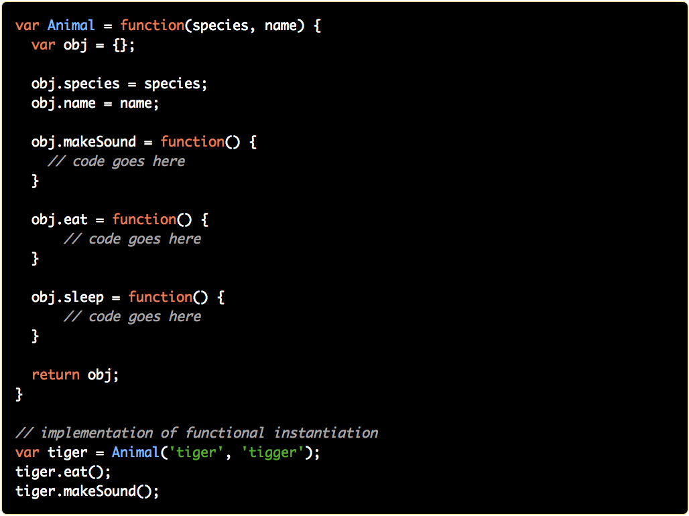
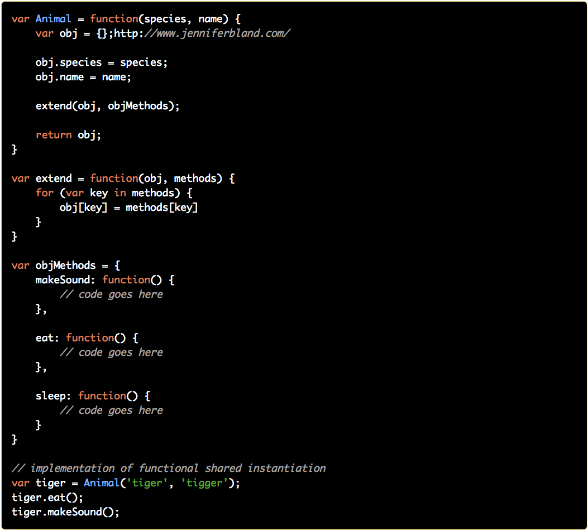

Topic#2
Object Creation
When a JavaScript variable is declared with the keyword "new", the variable is created as an object:
var x = new String(); // String object
var y = new Number(); // Number object
var z = new Boolean();// Boolean object
If I imagine my room as a JavaScript object, it would be:
var place = new Object();
place.status = "clean";
place.color = "beige";
Inheritance
First of all, we can create ClassA easily. Because there are no explicit classes, we can define a set of behavior (A class so…) by just creating a function. This “class” can be instantiated using the new keyword:
var ClassA = function() {
this.name = "class A";
}
ClassA.prototype.print = function() {
console.log(this.name);
}
var a = new ClassA();
a.print();
Now let’s add a tool to create “inheritance” between classes. This tool will just have to do one single thing: clone the prototype:
var inheritsFrom = function (child, parent) {
child.prototype = Object.create(parent.prototype);
};
By cloning the prototype, we transfer all members and functions to the new class. So if we want to add a second class that will be a child of the first one, we just have to use this code:
var ClassB = function() {
this.name = "class B";
this.surname = "I'm the child";
}
inheritsFrom(ClassB, ClassA);
Because ClassB inherited the print function from ClassA, the following code is working:
var b = new ClassB();
b.print();
And produces the following output:
class B
We can even override the print function for ClassB:
ClassB.prototype.print = function() {
ClassA.prototype.print.call(this);
console.log(this.surname);
}
In this case, the produced output will look like this:
class B
I’m the child
The trick here is to the call ClassA.prototype to get the base print function. Then thanks to call function we can call the base function on the current object (this). Creating ClassC is now obvious:
var ClassC = function () {
this.name = "class C";
this.surname = "I'm the grandchild";
}
inheritsFrom(ClassC, ClassB);
ClassC.prototype.foo = function() {
// Do some funky stuff here...
}
ClassC.prototype.print = function () {
ClassB.prototype.print.call(this);
console.log("Sounds like this is working!");
}
var c = new ClassC();
c.print();
The output:
class C I’m the grandchild Sounds like this is working!
Properties
Properties are the values associated with a JavaScript object. A JavaScript object is a collection of unordered properties. Properties can usually be changed, added, and deleted, but some are read only.
Property accessors provide access to an object's properties by using the dot notation or the bracket notation.
object.property;
object['property'];
Methods
JavaScript methods are the actions that can be performed on objects. A JavaScript method is a property containing a function definition.
var obj = {
foo() {
/* code */
},
bar() {
/* code */
}
};
Instantiation
With functional instantiation, we first create a function. Inside the function we create an empty object and add properties and methods to it. We then return this object. Every time the function is called we will have access to the methods that were created. Here is an example of functional instantiation:
Functional Shared Instantiation
One of the downsides of functional instantiation is that you duplicate methods in memory every time you create a new object. Functional shared instantiation attempts to overcome that limitation by making the methods shared among all objects. Just like functional instantiation, we start with a function with an empty object inside and define properties within the function. Methods are defined in another object. We then extend our object with these methods. In the end, we return the object. Every object created by functional shared instantiation will have a pointer to the same methods without duplication. Here is an example of functional shared instantiation.
Pros:
Removes the duplication of methods that was found in functional instantiation which improves memory
management.
Cons:
The pointers to the shared methods are created when the object is instantiated. If you modify the methods
and then create new objects, they original object and the new object will refer to different methods.
Prototypal Instantiation
Prototypal instantiation utilizes the prototype chain to create objects. Methods are attached to the object’s prototype using the Object.create method. To start you will create all the methods on a separate object. Then you create a function. Inside the function you use the Object.create method to attach the methods. You will also define any properties inside the function. Then you return the object. Here is an example of prototypal instantiation.
It is a good practice to use objects oriented principles when dealing with multiple objects of a same type.
Code in action: